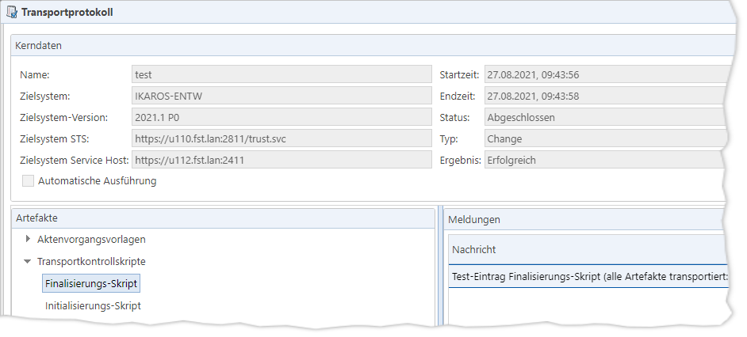

Benutzerinteraktion (u. a. Anzeige von
Dialogen oder Abfragen) ist innerhalb des Skripts nicht möglich.
Benutzerinteraktion (u. a. Anzeige von
Dialogen oder Abfragen) ist innerhalb des Skripts nicht möglich.Sie können in Transportkontrollskripten sämtliche Möglichkeiten nutzen, die Custom Code in IKAROS bietet, da die Skripte im Zielsystem von IKAROS selbst ausgeführt werden.
Einschränkungen
Benutzerinteraktion (u. a. Anzeige von
Dialogen oder Abfragen) ist innerhalb des Skripts nicht möglich.
Es ist nicht möglich, den Inhalt des
aktuellen Artefaktpakets per Programmierung generisch abzufragen oder zu
verändern. Beim Entwickeln eines Transportkontrollskripts müssen Sie daher
wissen, welche Artefakte im Paket enthalten sein werden, falls Sie z. B.
Vergleiche im Zielsystem vornehmen möchten.
Die Skripte werden im IKAROS-Zielsystem
ausgeführt. Falls Sie in den Skripten auf externe Programme zugreifen (z. B.
CMD-Befehle ausführen) oder externe Dateien schreiben/auslesen, müssen Sie
sicherstellen, dass alle potenziellen IKAROS-Zielsysteme die entsprechenden
Zugriffe erlauben.
Ergebnisse der Transportkontrollskripte im Transportprotokoll
Meldungen, die mittels der Transportkontrollskripte in das Transportprotokoll geschrieben wurden, stehen im TRMS-Protokoll in einem eigenen Knoten „Transportkontrollskripte“:

Abb. 44: Ergebnisse des Finalisierungs-Skripts im Transport-Protokoll
Verwendung von LINQ
Hinweis: In IKAROS basic/starter kann LINQ nicht verwendet werden.
Häufig werden Sie LINQ benötigen, um z. B. abzufragen, ob bestimmte Stammdaten im Zielsystem schon vorhanden sind (bzw. mit welchem Änderungsstand).
Custom Code bietet für viele, allerdings
nicht alle, möglichen Artefakt-Typen bereits eigene Objekte an. Dann können Sie
per LINQ direkt Objekte ermitteln. Beispielsweise für Aktenvorgangsvorlagen:
const eventTemplate = linq.execute('from e in @EventTemplate where e.eventCode === "Z001" select e').singleOrDefault();
Per LINQ können Sie auch andere
Stammdaten abfragen, für die es in IKAROS keine Objekte gibt. Dann müssen Sie
sich allerdings in LINQ per „new“-Anweisung typenlose Objekte zusammenstellen
und diese zurückliefern lassen:
const ccAppToTransport
= {
designation: 'Erfolgsstatistik',
nameSpace:
'Fs',
versionNo: 1
};
const allCcApps =
linq.execute('from app in @CustomApp select' +
' new {
designation = app.designation, nameSpace = app.nameSpace, versionNo =
app.versionNo, ID = app.customCode.Id, cvId = app.CvId }').toList();
if
(allCcApps.some(app => app.designation === ccAppToTransport.designation
&&
app.nameSpace ===
ccAppToTransport.nameSpace &&
app.versionNo === ccAppToTransport.versionNo)) {
trms.reportInfo('Custom Code app "' + ccAppToTransport.nameSpace + '.' +
ccAppToTransport.designation + '" already in target system.');
}
Oder Sie können die Suche nach den
Stammdaten direkt in die LINQ-Abfrage integrieren:
const ccAppToTransport
= {
designation: 'Erfolgsstatistik',
nameSpace:
'Fs',
versionNo: 1
};
const appExists =
linq.execute(`from app in @CustomApp where app.designation ===
"${ccAppToTransport.designation}" &&
app.nameSpace ===
"${ccAppToTransport.nameSpace}" &&
app.versionNo.toString() === "${ccAppToTransport.versionNo}"
select app.id`).any();
if (appExists) {
trms.reportInfo('Custom Code app "' + ccAppToTransport.nameSpace + '.' +
ccAppToTransport.designation + '" already in target system.');
}
TRMS-spezifische Zugriffe
Nur in Code, der als Transportkontrollskript ausgeführt wird, können Sie die Zugriffe des „Trms“-Objekts nutzen:
„trms.reportInfo()“:
Schreibt „Information“-Einträge ins Transportprotokoll.
„trms.reportError()“:
Schreibt einerseits „Fehler“-Einträge ins Transportprotokoll. Andererseits
bewirkt die Methode in Prerequisite- und Initialisierungs-Skripten, dass
kein einziges Artefakt aus der transportierten Paketdatei im Zielsystem
installiert wird. Die Skriptausführung wird trotz solcher Fehler fortgesetzt,
sodass Sie auch mehrere solcher Fehler protokollieren können. Allerdings führt
schon der erste Aufruf dazu, dass bei einem tatsächlichen Transport aus dem TRMS
kein Artefakt in das Zielsystem eingespielt würde.
„Trms.transportSuccessful“:
Liefert einen logischen Wert, ob alle Artefakte erfolgreich transportiert wurden
(true), oder ob bei mindestens einem im Zielsystem ein Fehler aufgetreten ist
(false).
Speziell verfügbare globale Variablen
|
Variable |
Beschreibung |
|
trms |
Das „trms“-Objekt ist nur nutzbar, wenn der Code als Transportkontrollskript ausgeführt wird. Nur dann haben Sie auch Zugriff auf dessen Methoden zum Schreiben von Einträgen in das Transportprotokoll. |
Tipp: TRMS-Skripte in IKAROS lauffähig machen
Die Nutzung der Zugriffe am „trms“-Objekt führen in IKAROS zu einem Fehler, wenn der Code nicht als Transportkontrollskript ausführt wird. Um ein Skript dennoch in IKAROS selbst entwickeln und testen zu können, bietet der Editor-Dialog im TRMS die Schaltflächen „Code für IKAROS kopieren“ und „Code von IKAROS einfügen“ an.
Wenn Sie den Code aus dem Editor durch Klick auf „Code für IKAROS kopieren“ in die Zwischenablage kopieren (es muss mindestens ein Zeichen im Editor stehen), reichert das TRMS Ihren Code automatisch mit generischem Custom Code an, der den gesamten Code im JavaScript-Editor von IKAROS lauffähig macht.
Dieser Code wird am Anfang Ihres Codes eingefügt:
(() => {class Trms
{
constructor()
{
/** @type {{type: "E" | "M",
message: string}[]} */
this.messages = [];
}
/**
* @param {(trms: Trms) => boolean | void}
callback
*/
runScript(callback) {
callback(this);
let result = 'S';
if (this.messages.some(x =>
x.type ===
'E'))
result = 'E';
return
JSON.stringify({
result:
result,
messages: this.messages
});
}
/**
* @param {string}
message
*/
reportError(message) {
this.messages.push({ type: 'E', message });
}
/**
* @param {string}
message
*/
reportInfo(message)
{
this.messages.push({ type: 'M',
message });
}
}
return new Trms().runScript(trms
=> {
// Code
des eigentlichen Transportkontrollskripts
});
})();
Rückgabe-Objekt mit den Meldungen
Bei Ausführung gibt dieser Code ein Objekt zurück, das einen Buchstaben für das Ausführungsergebnis sowie ein Array von Objekten enthält, welche die protokollierten Meldungen repräsentieren:
{
result: "S",
// "S" = success, "E" = error
messages:
[{
type:
"M",
message: "Text einer Infomeldung
..."
}, {
type:
"E",
message: "Text einer Fehlermeldung
..."
}]
}
Nach der Entwicklung in IKAROS müssen Sie den Code im Ganzen kopieren und dann im TRMS per Schaltfläche „Code von IKAROS einfügen“ einfügen. Dabei wird der zuvor angereicherte Code automatisch wieder entfernt.
Beispiel
In dem folgenden einfachen Beispiel wird per LINQ geprüft, ob im Zielsystem eine Aktenvorgangsvorlage „Z001“ existiert und ob entsprechende Vorgänge bereits in Akten angelegt wurden:
const eventTemplateCode =
'Z001';
const targetEnvironmentInfo =
fs.getSetting('SCHEME_VERSION') + ' (' + fs.getSetting('IKAROS-Umgebung') +
')';
const eventTemplate =
linq.execute(`from e in
@EventTemplate where
e.eventCode === "${eventTemplateCode}"
select e`).singleOrDefault();
if (eventTemplate !== null)
{
trms.reportInfo('Event template "' + eventTemplateCode +
'" with last change date ' +
eventTemplate.lastUpdate.toLocaleShortDateString() + ' exists in the target
environment ' +
targetEnvironmentInfo +
').');
if (linq.execute(`from e in @Event
where e.EventTemplate.eventCode ===
"${eventTemplateCode}" select e`).any()) {
trms.reportInfo('Actual "' + eventTemplateCode + '" events in cases
found.');
} else {
trms.reportError('No "' + eventTemplateCode + '" events not found in any IKAROS
case!');
}
} else {
trms.reportError('Event
template "' + eventTemplateCode +
'" does not
exist in the target environment ' + targetEnvironmentInfo +
').');
}